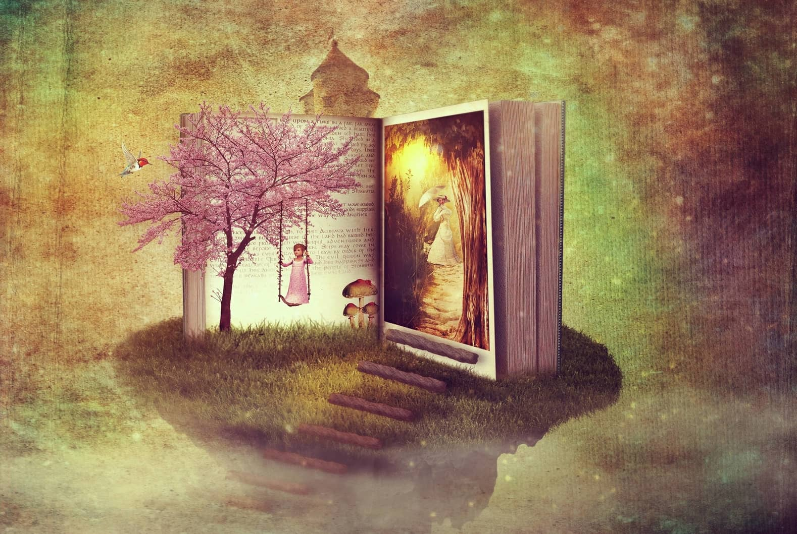
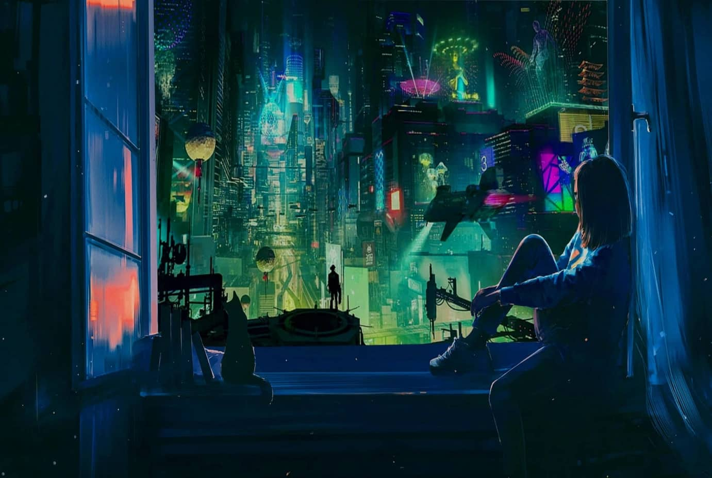
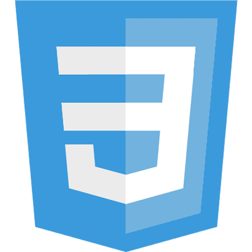
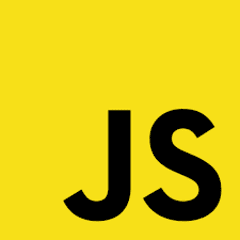
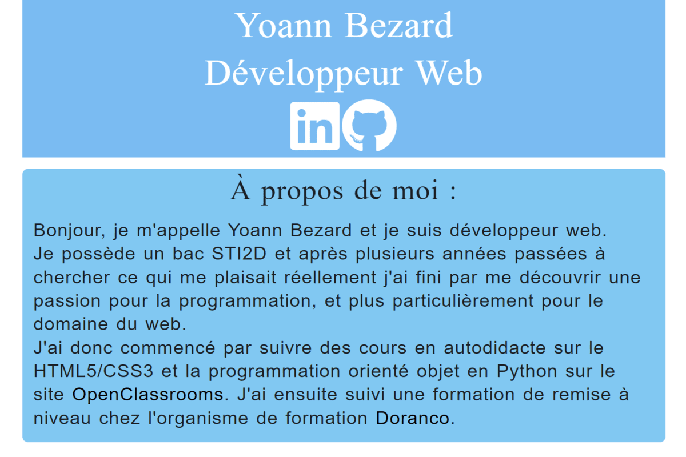
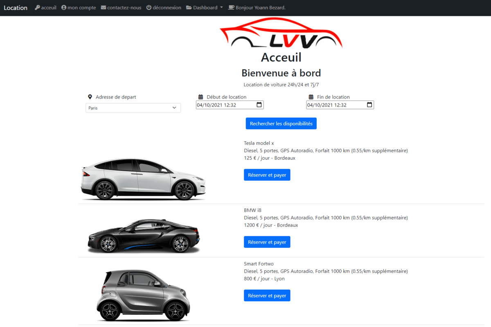
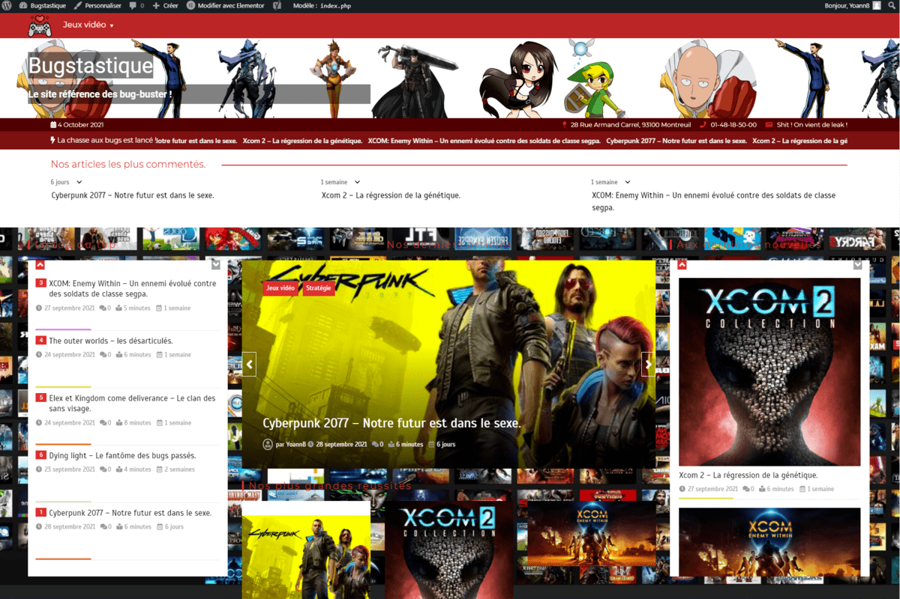

Sans un minimum de loisir, pas de travail créateur, par conséquent pas de culture ni de civilisation.
Roy Lewis.
Mes passions

La lecture.
Il est très facile de voyager en lisant un bon livre, parfois nous avons même l'impression de juste survoler les mots qui s'y trouvent en parcourant leurs pages.
La musique.
J'adore écouter de la musique tout en travaillant. L'on peut écouter différents styles; selon notre humeur ou encore selon ce que l'on n'est en train de faire afin de trouver plus facilement l'inspiration.
Les jeux vidéo.
J'adore jouer aux jeux vidéo depuis que je suis petit, et il y a une fonction qui est leur est commune à tous : il faut toujours cliquer pour pouvoir continuer de jouer. J'affectionne tout particulièrement les JRPG, ils sont la fusion merveilleuse des caractéristiques des rpg et du génie japonais; c'est d'ailleurs grâce à eux que j'ai eu envie de m'investir en anglais (afin de pouvoir jouer à ces jeux dit "jeux de niches" qui sont rarement traduit chez nous.

La science-fiction et le fantastique.
J'aime autant la science-fiction que le fantastique, ce sont deux types d'univers qui peuvent se retrouver partout et qui n'ont pour limite que notre imagination. On en compte aussi bien ces deux univers dans des œuvres cinématographiques, vidéoludiques, que littéraires.
Actuellement :
Mes compétences de développeur web
Elles sont en constante amélioration car pour moi la joie de ce métier fait que j'en apprend tous les jours, d'autant plus en étant impliqué, curieux et passionné.
Vous pouvez aussi aller faire un tour sur mon cv en version html/css, ou bien aller jeter un coup d'œil sur sa version pdf, voire même regarder la version animé pour en apprendre plus sur mes compétences et mon parcours professionnel.
Langages
HTML5
CSS3
JavaScript
PHP
MySQL
Frameworks
Bootstrap
CMS
Wordpress
Outils
Github
Visual studio code
Pendant les études, la réussite ne dépend que de soi, dans la vie professionnelle, la réussite dépend aussi des autres.
Edine-le-sage.
Mon portfolio
Mon CV
Voici le CV que j'ai fait en HTML5/CSS3, exclusivement pour mon portfolio. Il à été fait durant ma remise à niveau de développeur web chez Doranco, dans le but de me permettre de pratiquer mes nouvelles compétences et d'avoir un premier projet à exposer dans cette partie de mon site.
- HTML5
- CSS3
- Bootstrap5
Projet Véville
Le projet Véville est un TP PHP d'une semaine que j'ai réalisé durant ma remise à niveau chez Doranco. Il consistait à refaire le site de location de véhicule pour une société nommé Véville en utilisant nos compétences fraîchement acquises en PHP. Il dispose d'un système d'inctiption, de connection et de réservation pour les véhicules.
- HTML5
- CSS3
- PHP
- Bootstrap5
Bugstastique
Je l'ai fait en une journée et demie lors de la semaine d'initiation Wordpress de ma remise à niveau de développeur web en utilisant le thème color-newsmagazine. J'ai choisi de faire un site sur un sujet qui m'amusait: les bugs dans les jeux vidéo, et j'ai utilisé des captures d'écrans accumulées lors de mes nombreuses années de joueur pour illustrer le tout.
- Wordpress
N’importe quel idiot peut écrire du code qu'un ordinateur peut comprendre. Les bons programmeurs écrivent du code que les humains peuvent comprendre.
Martin Fowler.